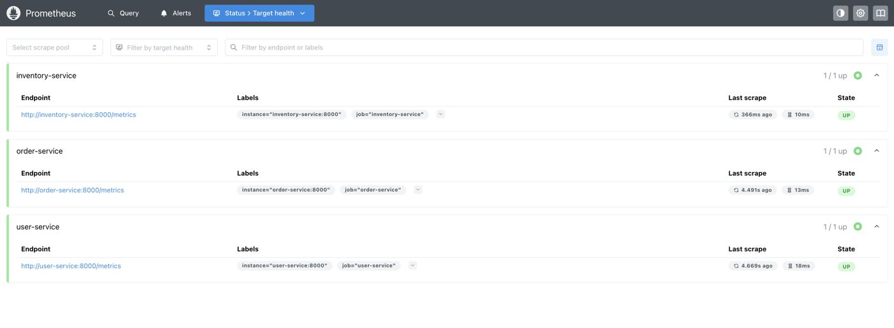
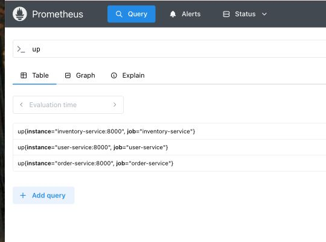
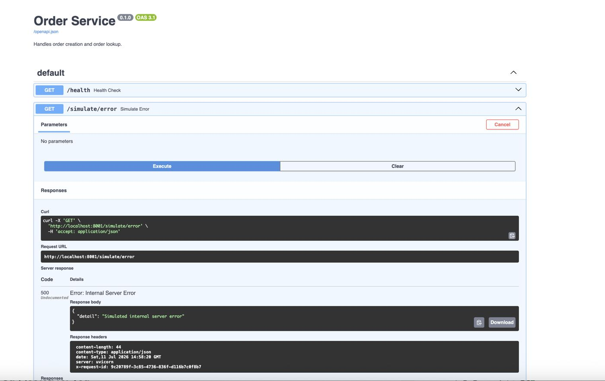
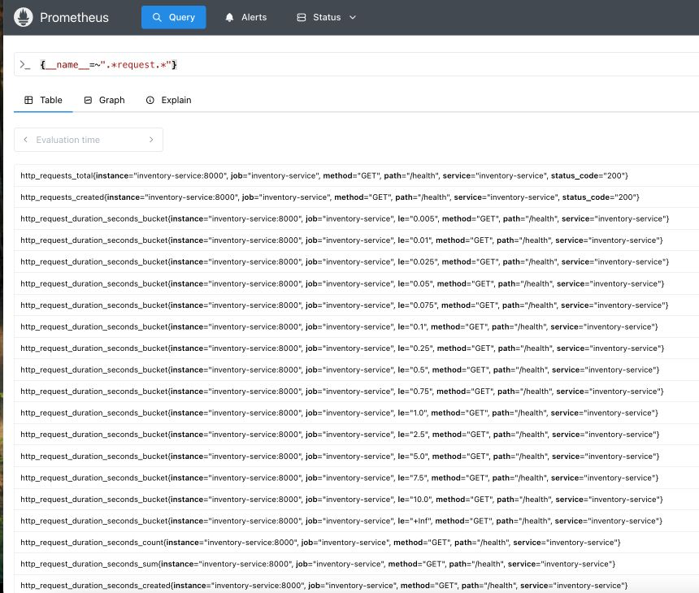
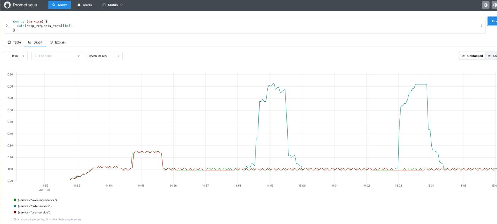
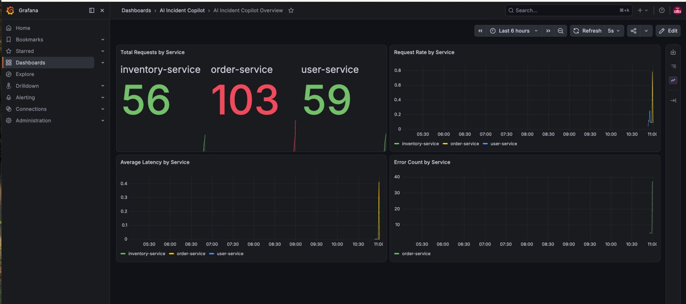
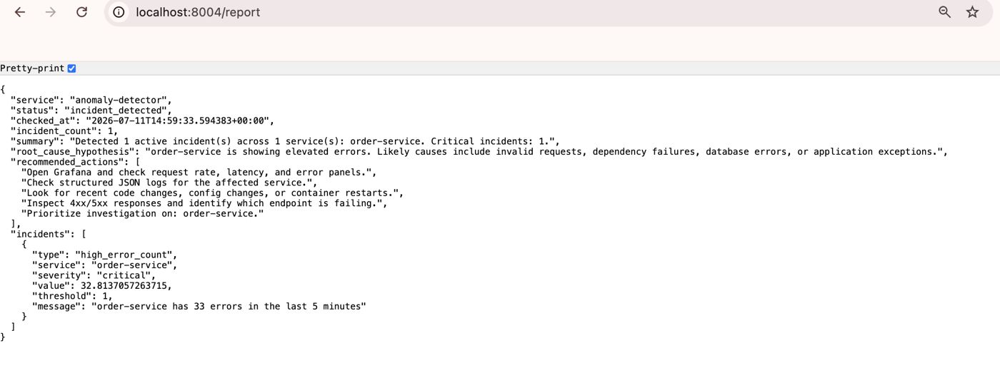
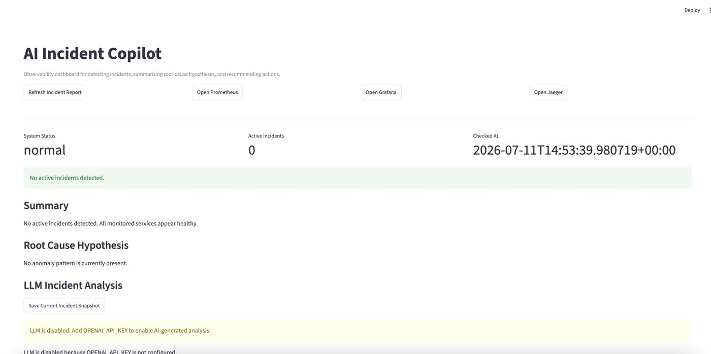
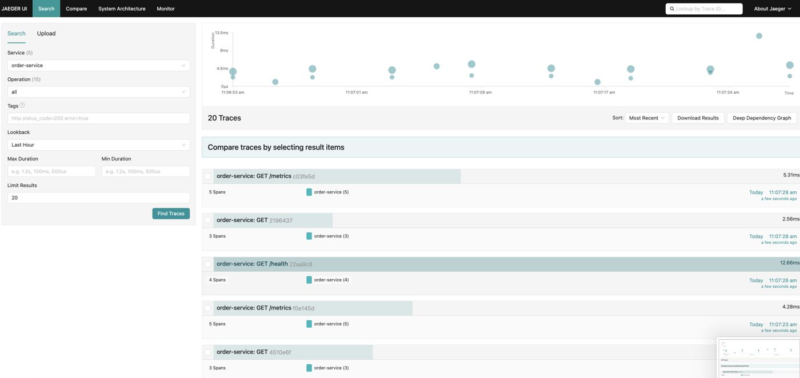

AI Incident Copilot
An AI-powered observability and incident-response platform for microservices. It simulates a production-style distributed system, collects logs, metrics, and traces, detects anomalies from Prometheus data, and generates incident reports with root-cause hypotheses and recommended actions — all surfaced in a Streamlit copilot dashboard.
Incident response is a lot of manual checking.
In real engineering teams, responding to an incident usually means manually checking logs, metrics, dashboards, traces, recent deployments, service dependencies, error rates, and latency spikes — one tab at a time. AI Incident Copilot explores how much of that first pass an assistant can do automatically: collect the signals, detect the anomaly, summarize the likely cause, recommend next steps, and save a snapshot for later review.
The detection pipeline
Traffic hits the FastAPI services, which expose Prometheus metrics. The anomaly detector queries those metrics on demand, and the Streamlit dashboard calls the detector to render (and optionally save) an incident report.
What it's built with
| Component | Local URL | Purpose |
|---|---|---|
| order-service | localhost:8001 | Order creation, validates users/items |
| user-service | localhost:8002 | User creation and lookup |
| inventory-service | localhost:8003 | Item creation and lookup |
| anomaly-detector | localhost:8004 | Queries Prometheus, generates incident reports |
| traffic-generator | localhost:8005 | Generates normal, error, slow, mixed traffic |
| incident-dashboard | localhost:8501 | Streamlit copilot dashboard |
| Prometheus | localhost:9090 | Scrapes and stores metrics |
| Grafana | localhost:3000 | Visualizes metrics |
| Jaeger | localhost:16686 | Visualizes distributed traces |
| PostgreSQL | localhost:5432 | App data + incident history |
Core capabilities under test
This isn't just a "is it running" check — it's a walkthrough of the full incident detection pipeline, end to end.
Running the pipeline end to end
Starting from a healthy baseline, injecting a real failure, and following the signal all the way to an AI-generated incident report.
up query confirms each target is reporting in.

/simulate/error endpoint. Hitting it on order-service via its Swagger UI returns a real 500 — the failure this whole pipeline is meant to catch.



/report endpoint directly returns a structured incident: which service, what type of anomaly, severity, the actual error count vs. threshold, and a plain-language message.

